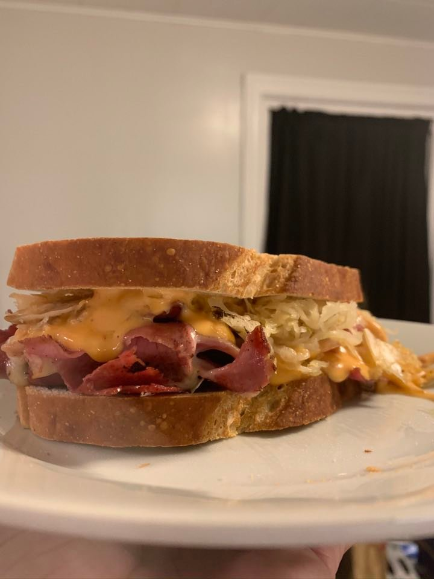

Reuben Sandwich

An Easy Reuben
This is going to be a simple recipe that you can make out
of what may
seem like the most random of ingredients
but when combined makes a
savory and elegant sandwich.
Ingredients
- Rye bread
- Sauerkraut
- Swiss Cheese
- Corned Beef
- Thousand Island
Dressing
Instructions:
- Start by preheating your pan to medium and taking out
about 4 slices of corned beef. Lay the corned beef in the
pan and let cook until it starts to curl and flip over.
- While corned beef is cooking, place sauerkraut in
medium saucepan over medium-low heat.
- When corned beef starts to curl, place two slices of
rye bread in the toaster to desired doneness.
- Please two slices of swiss cheese over corned beef in
pan and cover til melted.
- Take corned beef with melted swiss out of the pan and
carefully place onto one slice of rye bread, careful to make
sure cheese is evenly spread across.
- Remove sauerkraut from heat and scoop out liberally over
over the corned beef. Add liberal amount of Thousand Island
and let rest for about 3 minutes before eating.